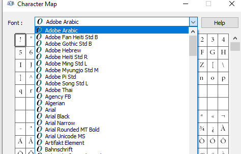

I begin this week with a rather mixed bag of interesting issues from the last:
We have looked at how to determine the MEP duct shape repeatedly in the past, e.g., in the articles on:
The question came up again in the following discussion, and the solution is now – and has been for some time now – at hand:
Question: How can I figure out the duct shape (oval, rectangular or round) from DuctType independently of its FamilyName? The FamilyName is a localized string, so cannot get the shape info out from it.
Answer: You can get the shape based on the connectors.
Response: Does DuctType have connector?
Answer: I'm not sure..... are you using FabricationParts or generics? Check to see if your element has a connector manager, then check the shape property on your connectors.
var fabPart = myElement as FabricationPart; foreach( Connector conn in fabPart.ConnectorManager.Connectors ) { var shape = conn.Shape; }
Response: I am using generic ducts, not FabricationParts.
I looked at The Building Coder posts listed above, but they don't work.
Answer: Perhaps you could take some of the code found in here?
DuctType dt = doc.GetElement( tid ) as DuctType; if( null != dt ) { if( HasInvalidElementIdValue( e, BuiltInParameter .RBS_CURVETYPE_MULTISHAPE_TRANSITION_OVALROUND_PARAM ) ) { shape = "rectangular"; } else if( HasInvalidElementIdValue( e, BuiltInParameter .RBS_CURVETYPE_MULTISHAPE_TRANSITION_RECTOVAL_PARAM ) ) { shape = "round"; } else if( HasInvalidElementIdValue( e, BuiltInParameter .RBS_CURVETYPE_MULTISHAPE_TRANSITION_PARAM ) ) { shape = "oval"; } }
Response: This is the same code I found in the link above; it fails when opening a new project not using the mechanical template.
Answer: You should be able to call getProfileType that is defined in the base class of the type to get the shape. If that doesn't work, you can use first code snippet above; if you replace the FabricationPart with Duct or FamilyInstance (for fittings), you can get the profile shape from the connectors.
The profile type is an enum, so there should be no string related issues.
Response: The old version of the Revit API that I am using cannot find getProfileType in the DuctType base class. The example code above only works when opening a new project using the mechanical template.
Answer: It should be defined in the MEPCurveType class; it was exposed to the API in 2019.
Response: Thanks, we are switching to 2019 soon, I will use it after that, finding a workaround for now.
On Revit 2018, I found that if I create a new project file using the Architectural Template, its three DuctType elements only have Default on each. In this case, the sample code above does not work. Which API function can create duct types just as when I create a new project using the Mechanical Template?
Answer: I don't think using the duct type will work for what you are trying to do unless you are using 2019 or later. If you access the duct or duct fitting (family instance) and get the connectors from the connector manager from the element you should be able to get the shape. That shape is the same for both.
Response: Our plugin is trying to recreate duct type from the data stored externally before drawing a duct instance. For example, if the plugin stores an oval duct type externally called newDuctType1, in order to insert this duct instance into the model, it needs to create this duct type in Oval Duct first. The plugin can hard code the "Oval" string to find FamilyName "Oval Duct" in the English version of Revit, but it will not work in other languages. This is why I am looking for a solution or workaround in 2018 to determine the shape from duct type.
Later: I have not found any solution for 2018. We decide to use the sample routine (see above) you created but it works only if all three duct types (oval, rectangular and round) have real duct type in them. The workaround on 2018:
If none of the three parameters in the sample routine return a valid element id, it means the drawing does not have any real duct types except the ones called “Default”; then it displays a warning to the user, asks her to transfer duct types from some other model and delete the ones called “Default”.
Answer: I am sure the workaround can be improved, and that a reliable algorithm to distinguish MEP element shapes can be devised. For instance, you could look at the number, geometrical location and direction of the connectors. That will provide a lot of information. You can look at the geometry.
Later: Did you ever resolve this?
Response: For Revit 2019 and newer, there is a new DuctType property for this, DuctType.Shape.
For Revit 2018 and older, we get the value from the RoutingPreferenceRuleGroupType enumeration values TransitionsRectangularToRound, TransitionsRectangularToOval and TransitionsOvalToRound, then check whether the returned list has count 0.
Question: How can I find out changes between different versions of a .NET assembly DLL?
For instance, how can I identify recent additions to the public API?
Is there a better way than manually looking at changed files in the commit history?
Answer: You can easily automate the comparison of public interfaces in two different versions of the DLL, e.g., using free tools to compare .NET assemblies.
Mathias Ottosson of WSP very kindly shares an important UI enhancement of the venerable BipChecker, the Revit built-in parameter checker, in his Revit API discussion forum thread on I gave Jeremys BIP checker a facelift, explaining:
I really enjoy the nifty tools that Jeremy has created or maintains, like the BipChecker and RevitLookup. Truly useful tools that I use more or less daily when I develop for Revit.
But when I use them a lot, I feel some pain points that makes them a little bit less fun to use.
I was using BIP-checker the other day and felt it was a bit annoying to have to expand the columns every time I opened it for a new element, or the fact that it doesn't scale very well on higher DPI monitors, making the select element dialog look weird. So, I decided to improve it a little and rewrote the UI in WPF instead of winforms to be able to fix those minor issues and to have the ability to maybe add more functionality like copying values and such.
I put it up on my BipChecker-WPF GitHub for everyone to benefit and give feedback.
It's about 98% done as I haven't implemented grouping yet (WPF is truly not easy to work with...), but I hope to get to it soon.
I haven't tested it in all versions of Revit (just 2018). Since I haven't made any changes to the Revit logic parts, it should work just as well in all versions that Jeremy's version supports.
Improvements:
As said, I haven't made any logic changes in the Revit code, and all credit still goes to Jeremy for his work.
I just felt this could benefit others and wanted to share with the community.
Ever so many thanks to Mathias for this useful enhancement!
Now I just need to figure out how to also get it into the main master codestream...
Another question from the Revit API discussion forum thread that has come up in the past is how to retrieve the fonts that begin with '@':
This issue was discussed back in 2012 in the article on fonts starting with "@" by Mikako Harada.
The new thread digs a bit deeper, though, and the solution once again provided by Richard RPThomas108 Thomas:
Question: I'm doing research on getting Fonts from various elements and assessing whether they are installed on the system.
I've come across an issue with fonts that are available in Revit's list that begin with @.
These are not installed on the system and are duplicates of a font without the @.
As far as I can tell, these
are fonts that are used in vertical typefaces.
Fonts that start with '@'

Duplicate fonts

System fonts
This is indeed Revit API specific.
I can get the value of the fonts in use by text types, dimension types, etc., by reading the TEXT_FONT parameter.
I can also get the fonts on the system by using
the InstalledFontCollection class.
It requires a reference to System.Drawing.
But neither of these can return the @Name fonts that appear in the UI for picking a font.
So, the question is, how can I get the list of fonts that Revit lists for my application?
Code to get system fonts:
public void GetAllInstalledFonts() { System.Drawing.Text.InstalledFontCollection ifc = new System.Drawing.Text.InstalledFontCollection(); List<string> fontList = new List<string>(); //list of all font family names foreach( var font in ifc.Families ) fontList.Add( font.Name ); fontList.Sort(); TaskDialog.Show( "Installed Fonts", string.Join( Environment.NewLine, fontList ) ); }
Answer: Mikako's article on fonts starting with "@" might help.
I don't know if IT was written for 64bit or 32bit so might need adjustment, also I don't know that it works at all.
There is also the FontDialog that you can call up from windows.Forms, even in WPF:
Private Function TObj70( ByVal commandData As Autodesk.Revit.UI.ExternalCommandData, ByRef message As String, ByVal elements As Autodesk.Revit.DB.ElementSet) As Result Dim FD As New Windows.Forms.FontDialog FD.ShowColor = False 'or True if you like FD.ShowEffects = False FD.MinSize = 10 FD.MaxSize = 10 FD.ShowEffects = False FD.AllowScriptChange = False FD.AllowSimulations = False FD.ShowDialog() Dim Nme As String = "" If FD.Font.GdiVerticalFont Then Nme = "@" & FD.Font.Name Else Nme = FD.Font.Name End If TaskDialog.Show("Font", Nme) Return Result.Succeeded End Function
Although it lists with the @ prefix, the name is without it, so you have to add it manually.
From this topic I assume .GdiVerticalFont is the appropriate property to determine the '@ness'.
Response: The method used in the link you sent to AEC DevBlog helped. It gives more fonts than are shown by Revit but I think I can work with it.
Many thanks to Richard for the crucial answer.